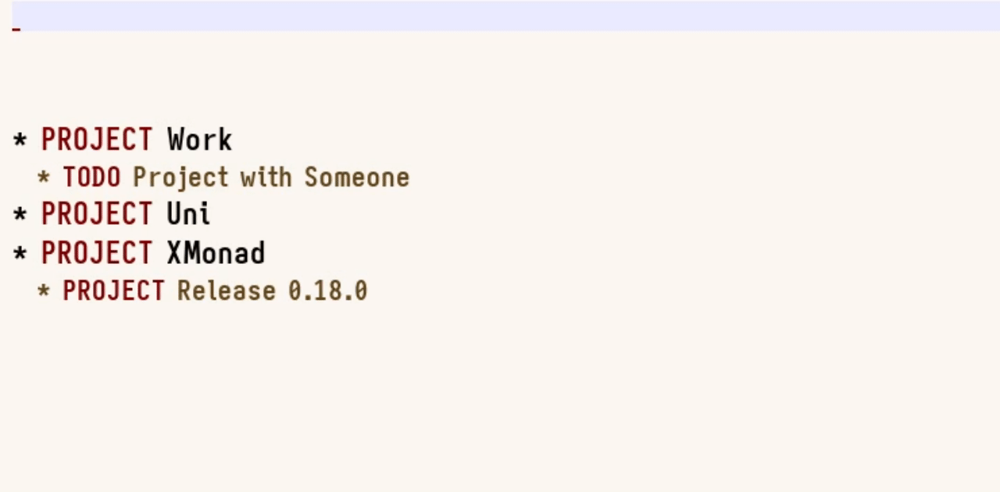

Motivation¶
If you don’t know, refiling is the act of moving an entryA headline, possibly with an attached body. below another heading; i.e., such that it becomes a subheading there. This can be useful for structuring todos into separate categories: one might have projects called “work”, “life”, “xmonad”, and so on, where all related tasks live. Quite convenient! So far, X.P.OrgMode just dumped the created note at the end of the specified file, leaving you to pick up the pieces. This aligns with my personal workflow—while I extensively use refiling, I only do so at the end of the day after reviewing all tasks that have accumulated. However, it is conceivable that someone might want to refile certain tasks straight away when it’s pretty clear that (i) they’ll be kept, and (ii) they can be unambiguously assigned to a certain heading (e.g., an already scheduled work meeting with X).Showcase¶
Long story short, this is now built into X.P.OrgMode. There are two new functions: orgPromptRefile :: XPConfig -> String -> FilePath -> X ()
orgPromptRefileTo :: XPConfig -> String -> String -> FilePath -> X ()
orgPromptRefile works is that, after querying for a todo, it
always inserts the note into the file and then possibly refiles it
to another heading. This way, you don’t need to worry about losing
notes when you abort the refiling prompt or enter a non-existent
heading.

Note: Refiling is (near) instant; the delay you are seeing above is due
to auto-revert-mode.
Some Gory Details¶
All of the refiling is actually directly done by Emacs itself! More precisely, the edsl that XMonad.Util.Run defines—which I’ve also written about—shells out to Emacs. This might intuitively feel horrible, but that’s just another reason to share it:refile :: String -> FilePath -> X ()
refile (asString -> parent) (asString -> fp) =
proc $ inEmacs
>-> asBatch
>-> eval (progn
[ "find-file" <> fp
, "end-of-buffer"
, "org-refile nil nil"
<> list [ parent, fp, "nil"
, saveExcursion
["org-find-exact-headline-in-buffer" <> parent]
]
, "save-buffer"
])
(progn
(find-file «fp»)
(end-of-buffer)
(org-refile nil nil
(list «parent» «fp» nil
(save-excursion
(org-find-exact-headline-in-buffer «parent»))))
(save-buffer))
Closing Thoughts¶
Writing this was actually a lot of fun, and a great opportunity to play with the edsl that X.U.Run exposes. I reckon there are a few places in my own xmonad configuration in which I could use these kinds of “Emacs scripts” to great effect! One other idea I’ve had is to integrate this into the language that plain oldorgPrompt accepts. It could be prefixed by something like
“ref:”, followed by a unique substring with which to identity a
heading. This would have the disadvantage that—without the second
prompt—one would not get any suggestions for headings. However, if you
want to refile something you probably know where you want to put it;
plus, it would not involve a possibly distracting second prompt.
Actually, this sounds like a good first pull request: contributions
welcome!